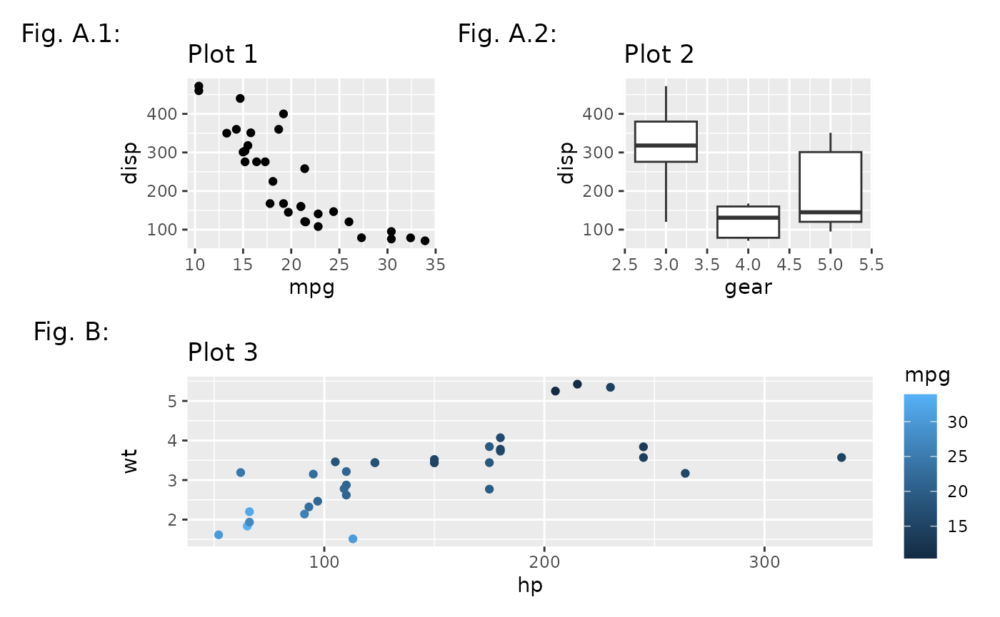
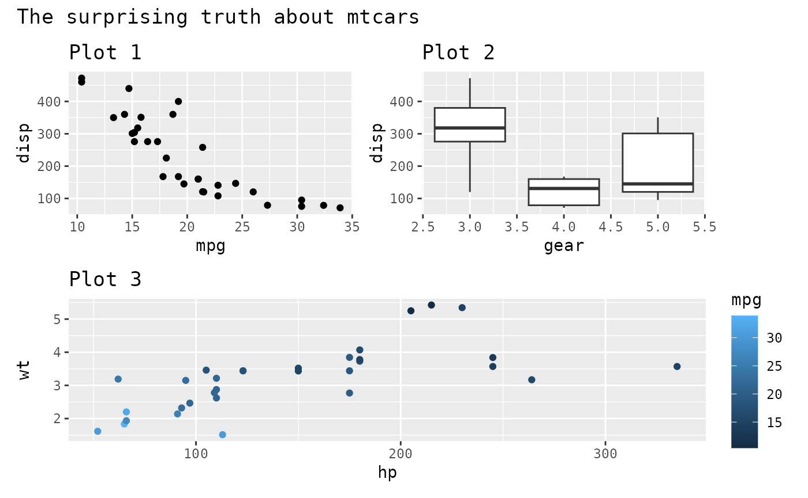

Sometimes you simply want to put multiple plots side by side and call it a day, but often you want the end result to stand forth like a collective thing. To achieve that you would often add a title and other textual cues. This guide will teach you how to do that.
As always, we start with some plots.
library(ggplot2)
p1 <- ggplot(mtcars) +
geom_point(aes(mpg, disp)) +
ggtitle('Plot 1')
p2 <- ggplot(mtcars) +
geom_boxplot(aes(gear, disp, group = gear)) +
ggtitle('Plot 2')
p3 <- ggplot(mtcars) +
geom_point(aes(hp, wt, colour = mpg)) +
ggtitle('Plot 3')
p4 <- ggplot(mtcars) +
geom_bar(aes(gear)) +
facet_wrap(~cyl) +
ggtitle('Plot 4')Titles, subtitles and captions
One of the most needed things is to add descriptive text to your plot ensemble. To achieve this, you simply add it to your patchwork using plot_annotation()
patchwork <- (p1 + p2) / p3
patchwork + plot_annotation(
title = 'The surprising truth about mtcars',
subtitle = 'These 3 plots will reveal yet-untold secrets about our beloved data-set',
caption = 'Disclaimer: None of these plots are insightful'
)
It is important to note that plot annotations only have an effect on the top-level patchwork. Any annotation added to nested patchworks are (currently) lost. If you need to have annotations for a nested patchwork you’ll need to wrap it in wrap_elements() with the side-effect that alignment no longer works.
Tagging
Often, especially in scientific literature, multiple plots are collected in a single figure and referred to by a tag. While such tags could be added manually, it is much simpler to let patchwork handle it for you, using the auto-tagging functionality. This is turned on by setting tag_level in plot_annotation() to a value indicating the family of symbols to use for tagging: '1' for Arabic numerals, 'A' for uppercase Latin letters, 'a' for lowercase Latin letters, 'I' for uppercase Roman numerals, and 'i' for lowercase Roman numerals.

Tags uses the theming of the plot they are applied to, so make sure they match up, or modify the theming of all plots using & (see the Plot Assembly guide).

When the patchwork contains nested layouts the tagging will recurse into them by default, but you can tell it to define a new tagging level with the tag_level argument in plot_layout(). You can then provide multiple tag-types to tag_levels to define how subtagging should be enumerated.
patchwork[[1]] <- patchwork[[1]] + plot_layout(tag_level = 'new')
patchwork + plot_annotation(tag_levels = c('A', '1'))
With plot_annotation()it is also possible to define separator, prefix, and suffix for the tag, but don’t go overboard with it:
patchwork + plot_annotation(tag_levels = c('A', '1'), tag_prefix = 'Fig. ',
tag_sep = '.', tag_suffix = ':')
The default ggplot2 theme puts the tag in its own row and column that will expand to fit. For longer tag text this will look weird, so it is better to place it on top of the plot region:
patchwork +
plot_annotation(tag_levels = c('A', '1'), tag_prefix = 'Fig. ', tag_sep = '.',
tag_suffix = ':') &
theme(plot.tag.position = c(0, 1),
plot.tag = element_text(size = 8, hjust = 0, vjust = 0))
Styling the patchwork
Most of the style of the patchwork is made up by the themes of the individual patches. For a coherent look, don’t mix videly different looks. Setting the background colour of a single plot to a different shade is an effective way to highlight it, but e.g. different fonts or line widths will just look like a mess. The patchwork itself has a few elements itself that is succeptible to theming: A background, a margin, and title, subtitle & caption. The theme of the patchwork is by default the default ggplot2 theme. It can be changed though, in two different ways. The easiest is to simply use & with a theme element. This operator will add to the theme of all subplots as well as to the theme of the patchwork itself:
patchwork +
plot_annotation(title = 'The surprising truth about mtcars') &
theme(text = element_text('mono'))
If you need to address only the theme of the patchwork itself (e.g. for making the patchwork title larger than the plot titles), it can be done with the theme argument in plot_annotation() (note that the use of one does not exclude the other):
patchwork +
plot_annotation(title = 'The surprising truth about mtcars',
theme = theme(plot.title = element_text(size = 18))) &
theme(text = element_text('mono'))
Want more?
Now you know how to annotate and style your patchwork. Read the other guides about assembling and laying out patchwork to master all of patchwork.